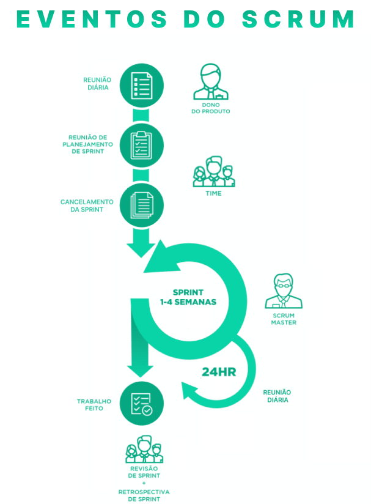
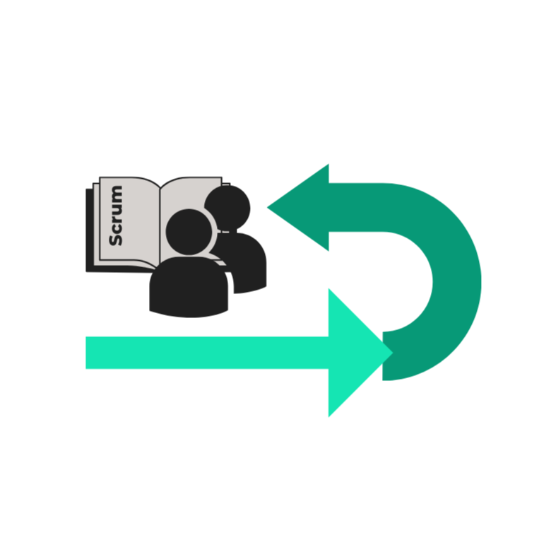

Eventos Scrum
Sprint
A Sprint, o núcleo do framework Scrum, é um período time-boxed com duração de um mês ou menos. Durante
essa fase, o Time de Desenvolvimento cria um incremento "Pronto" do produto. Composta por eventos como
Reunião de Planejamento da Sprint, Reuniões Diárias, trabalho de desenvolvimento, Revisão da Sprint e
Retrospectiva da Sprint, a Sprint mantém consistência em todo o esforço de desenvolvimento. Mudanças que
possam comprometer o objetivo da Sprint não são permitidas durante esse período, garantindo que metas de
qualidade não diminuam e que o escopo possa ser esclarecido e renegociado conforme necessário.

Cancelamento da Sprint
Embora raro devido à curta duração das Sprints, a Sprint pode ser cancelada antes de seu término se o
objetivo tornar-se obsoleto. A autoridade para cancelamento reside exclusivamente no Product Owner,
embora possa ser influenciado por partes interessadas, o Time de Desenvolvimento ou o Scrum Master.
Reunião de Planejamento da Sprint
Um evento crucial, a Reunião de Planejamento da Sprint, planeja o trabalho a ser realizado durante a
Sprint. Time-boxed em até oito horas para Sprints de um mês, essa reunião colaborativa envolve todo o
Time Scrum, utilizando o Backlog do Produto, o incremento mais recente, a capacidade prevista do Time de
Desenvolvimento e desempenho passado como entradas.
Reunião Diária
Esta reunião time-boxed de 15 minutos sincroniza as atividades do Time de Desenvolvimento, fornecendo um
plano para as próximas 24 horas. Os membros do time compartilham o que fizeram, o que farão e
identificam possíveis obstáculos. Essa prática melhora a comunicação, elimina outras reuniões e promove
decisões rápidas.
Revisão da Sprint
Realizada no final da Sprint, a Revisão da Sprint inspeciona o incremento e adapta o Backlog do Produto
conforme necessário. Uma reunião informal que colabora entre o Time Scrum e as partes interessadas,
destacando o que foi bem, problemas enfrentados e uma demonstração do trabalho "Pronto".

Retrospectiva da Sprint
Ocorrendo após a Revisão da Sprint, a Retrospectiva da Sprint é uma oportunidade para o Time Scrum
inspecionar seu desempenho e planejar melhorias para a próxima Sprint. Time-boxed em até três horas,
essa reunião identifica pontos fortes, áreas de melhoria e cria um plano para a implementação dessas
melhorias.